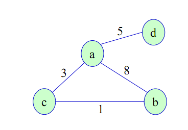
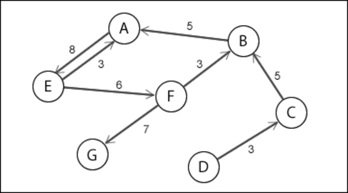
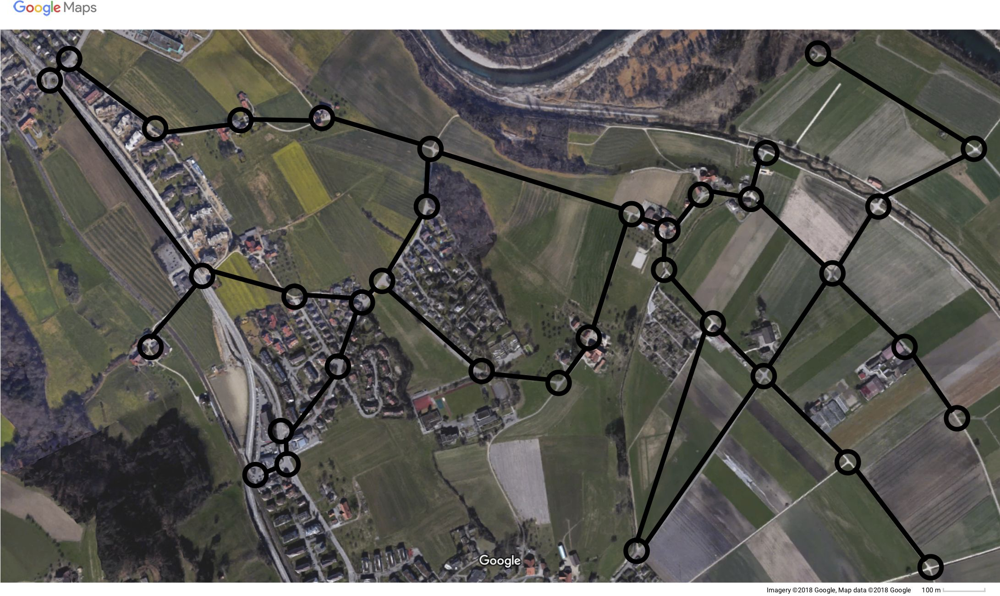
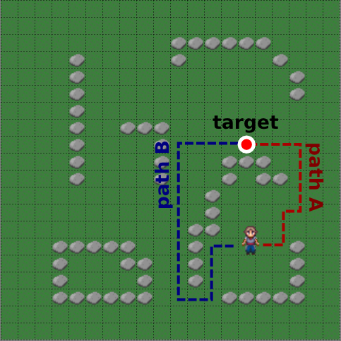

2.1 Introducció al pathfinding
El pathfinding és una tècnica utilitzada en intel·ligència artificial per a determinar la millor ruta entre dos punts en un entorn. Aquesta tècnica és especialment útil en videojocs, on els personatges controlats per l'ordinador (NPCs) necessiten moure's de manera eficient i realista dins del món del joc.
Algorismes de pathfinding
Hi ha diversos algorismes de pathfinding, però els més comuns són:
- Dijkstra: Un algorisme que troba el camí més curt en un graf, encara que pot ser menys eficient que A* en entorns grans.
- Algorisme A*: Un dels algorismes més populars i eficients. Utilitza una heurística per guiar la cerca de camins.
Grafs i nodes
Un graf és una estructura de dades composta per nodes (o vèrtexs) i arestes (o connexions) que representen les relacions entre els nodes. En el context del pathfinding, els nodes representen punts en l'espai, i les arestes representen les connexions possibles entre aquests punts.

Existeixen diferents tipus de grafs:
- Grafs etiquetats: On les arestes tenen pesos associats que representen el cost de moure's entre nodes.
- Grafs dirigits: On les connexions entre nodes tenen una direcció específica.


Un graf pot estar etiquetat i ser dirigit al mateix temps:

Una aplicació comuna de la teòria de grafs és el càlcul de rutes en sistemes de navegació, on els nodes representen interseccions i les arestes representen carreteres amb diferents costos (distàncies, temps de viatge, etc.).


Algorisme de Dijkstra
L'algorisme de Dijkstra és un algorisme de cerca de camins que troba el camí més curt des d'un node d'origen fins a tots els altres nodes en un graf amb pesos no negatius. Funciona assignant un cost acumulat a cada node i actualitzant aquest cost a mesura que es troben camins més curts.
L'algorisme segueix aquests passos bàsics:
- Inicialitza tots els nodes amb un cost infinit, excepte el node d'origen que s'inicialitza amb un cost de zero.
- Marca tots els nodes com a no visitats.
- Selecciona el node no visitat amb el cost més baix com a node actual.
- Actualitza els costos dels nodes veïns del node actual.
- Marca el node actual com a visitat.
- Repeteix els passos 3-5 fins que tots els nodes hagin estat visitats.

Algorisme A*
L'algorisme A* és una extensió de l'algorisme de Dijkstra que utilitza una heurística per guiar la cerca de camins. Aquesta heurística estima el cost restant des del node actual fins al node de destinació, permetent a l'algorisme prioritzar els nodes que semblen més prometedors.
En el cas del pathfinding en un entorn 2D, una heurística comuna és la distància entre dos punts.
L'algorisme A* segueix aquests passos bàsics:
- Inicialitza tots els nodes amb un cost infinit, excepte el node d'origen que s'inicialitza amb un cost de zero.
- Marca tots els nodes com a no visitats.
- Selecciona el node no visitat amb el cost total més baix (cost acumulat + heurística) com a node actual.
- Actualitza els costos dels nodes veïns del node actual.
- Marca el node actual com a visitat.
- Repeteix els passos 3-5 fins que s'arribe al node de destinació o no hi hagi més nodes per explorar.
Comparació entre Dijkstra i A*: